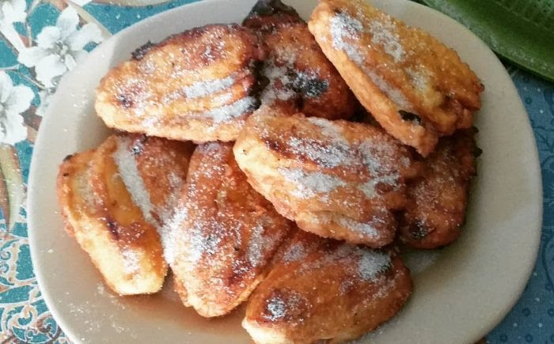

Delicacies in Marinduque
Arrowroot Cookies
Arrowroot cookies or popularly known as uraro, are the number one pasalubong food in Marinduque you can buy for your loved ones at home. It’s also the number one snack to buy to eat when traveling or exploring the island province.
Arrowroot cookies, or as the Marinduqueños call it, arurut, are dry, powdery, bite-sized flower-shaped cookies made from arrowroot flour. Travelers can buy these cookies in packages. Locals often point to Rejano’s Bakeries as having the best arrowroot cookies in Marinduque.
Kalamay-dampa
Kalamay-dampa is the popular Marinduque variety of the more known kalamay-hati. Kalamay is the general term for this typical recipe of both the variety of kalamay-dampa and kalamay-hati. Kalamay is made up of ground glutinous rice, coconut milk, and brown sugar. It’s popularly served in a coconut shell or in slices on banana leaves.
Kalamay-hati is a viscous version of kalamay where the glutinous rice is ungrounded. Kalamay-dampa is just like kalamay-hati, except ube is used in the recipe, giving it a rich purple color and ube flavor.
Tinudtod
During breaks from seeing the wonders that Marinduque offers, travelers can easily encounter food stalls at the streets selling these unique Marinduque native delicacy called tinudtod. Tinudtod looks like slices of banana mashed together using a yellowish paste.
It’s made up of slices of saba banana, a native variety of banana in the Philippines, mashed together and dipped into a special mixture. It’s fried in hot oil until the tinudtod turned golden brown. It’s a very popular delicacy for meryenda or mid-afternoon snacks.
Maruya

Just like tinudtod, Maruya is an extremely popular meryenda dish or mid-afternoon snack in Marinduque and even in the Philippines as a whole. Travelers can find this delicious and filling snack in food stalls at the side of the street in neighborhoods and markets.
Maruya also uses saba banana, except its sliced vertically, for a flatter shape. The banana slices are dipped in the special batter, lined to form a bed of banana slices, and deep-fried.
Saludsod
Saludsod is Marinduque’s native version of pancakes. It’s a popular local delicacy that visitors absolutely must try when in Marinduque as they’ll never find this anywhere else in the Philippines. This local pancake is made with a special batter using native ingredients, including arrowroot powder, coconut milk, flour, and sugar.
The batter is then cooked on a hot pan just like a typical pancake. But saludsod is sweeter in flavor and has a creamy/buttery texture.
Tininta Suman
.jpeg)
You can find the kakanin suman in many parts of the Philippines. Suman is usually made up of glutinous rice cooked in coconut milk and wrapped in banana leaves or palm leaf strips. These sticky native rice delicacies are often eaten with sugar or latik. In Marinduque, they have a unique version of suman called tininta suman.
It’s known for its vibrant purple hue because it’s made up of violet glutinous rice. Marinduqueños love to pair tininta suman with sampililok or coco jam.
Bibingkang Lalaki
The island province has several native versions of bibingka, a staple rice cake delicacy found all over the Philippines, with Bibingkang Lalaki (male bibingka) being just one of them.
Bibingkang Lalaki is also referred to as Bibingkang Boac, named after the province’s capital. It’s a huge portion of bibingka; that’s the size of a pizza.
Locals will explain amusedly that this version of bibingka is called as thus because it contains eggs. Bibingkang lalaki also uses coconut wine instead of yeast, which keeps its inside moist after cooking.
Bibingkang Pinahiran
Another native version found in Marinduque can be bought in the town of Sta. Cruz is located on the northeastern coast of the island.
Bibingkang Pinahiran uses typical bibingka ingredients like glutinous rice, coconut milk, and sugar. What makes it stand out from other versions of bibingka is the thick spread of a syrup layer on top.
This likely is the origin of its name with pinahiran translating to coated. One serving of this sweet bibingkang pinahiran guarantees a heavy stomach.
Panganan
With the abundance of arrowroot in Marinduque, it’s only fitting that they have something like the panganan as a local delicacy. Panganan is a dry powdery snack made with arrowroot powder and rice flour, called minatamis na bao, made from dissolved sugarcane jaggery.
Visitors can buy panganan in travel size packages for a delicious snack during their travels in Marinduque. It’s readily available in many of the province’s markets.
Bibingkang Kanin
This is the third native Marinduque bibingka on this list. Bibingkang Kanin, just like bibingkang lalaki and bibingkang pinahiran, is a unique version of the popular kakanin, bibingka, originated in the island province of Marinduque.
As indicated by its namesake, bibingkang Kanin uses whole grains of glutinous rice rather than the typical rice flour used in other bibingka recipes. Bibingkang Kanin is often interchanged with bibingkang malagkit.